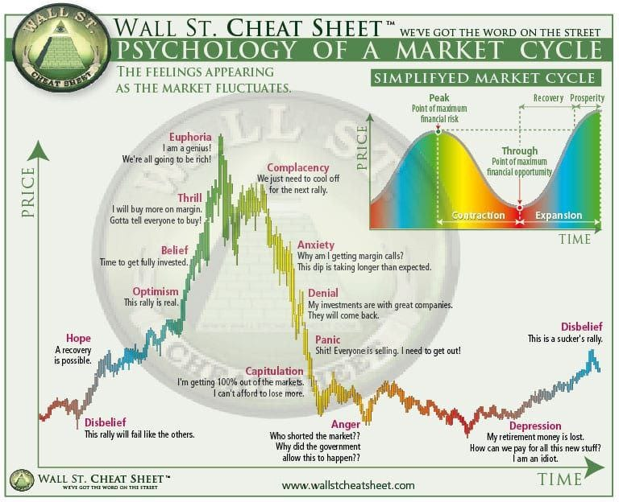

Learn the market cycle before the cycle tests you.
Markets move through optimism, euphoria, anxiety, panic, disbelief, and recovery. Crypto makes the emotions louder, but the psychology appears across stocks, property, commodities, and speculative assets.
Common cycle mistakes
Many beginners wait until friends, media, and influencers are excited. That can mean risk is already higher.
If you do not know why you own something, you will not know what to do when it rises or falls.
Market gains do not matter if fees, leverage, liquidity, custody, tax, or platform risk quietly damage the result.
AI, property booms, commodities, crypto, small caps, and new sectors can all become overhyped. Real adoption takes time.
Member rules for volatile markets
- Never use money needed for rent, bills, debt, tax, or emergency savings.
- Position size so a major drawdown does not destroy your life, sleep, or confidence.
- Separate long-term investing, tactical ideas, and speculation into different mental buckets.
- Record every purchase reason and review it when the market mood changes.
- Expect stories to sound most convincing near emotional extremes.
Cycle phases to recognise

Open the psychology cycle illustration
| Phase | What it feels like | Member behaviour |
|---|---|---|
| Disbelief | Prices recover but most people think it is temporary. | Study calmly. Avoid rushing. Build watchlist. |
| Acceleration | Stories improve, media attention returns, confidence rises. | Review position sizing, fees, liquidity, and risk before emotion increases. |
| Euphoria | Everyone seems to be winning and risk feels invisible. | Do not increase risk because of social pressure. |
| Drawdown | Prices fall, narratives break, fear returns. | Revisit thesis, avoid leverage, learn from mistakes. |
Cycle lessons
Staying solvent and emotionally stable matters more than calling the exact top or bottom.
Small assets can rise fast and collapse faster. Exiting can be harder than entering.
A hacked wallet, failed platform, high-fee product, tax surprise, or poor liquidity can turn paper gains into real loss.
The popular sector changes. A good process survives changing stories.
Ongoing member updates
This module should grow over time with new studies, market notes, product updates, member questions, and lessons from real market behaviour. Premium should feel alive: not a static folder, but a learning hub that improves as members ask better questions.
Risk controls for cycle investing
- Define the maximum percentage of net worth exposed to high-volatility crypto assets.
- Separate long-term Bitcoin learning from short-term altcoin speculation.
- Keep tax obligations and emergency cash outside the market.
- Use a custody checklist before market excitement increases.
- Write a rule for taking risk down when position size grows faster than knowledge.
Social media cycle traps
During bull markets, social media rewards confidence, speed, and dramatic price targets. During bear markets, it rewards fear and anger. Members should use social content as a source of questions, not as an instruction system. A good process stays calmer than the feed.